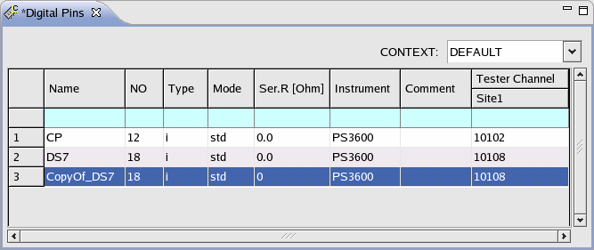

Copying and pasting a pin
Some pins have similar configuration, for example, the pins of a data bus. Defining these pins, you can use the function of copying and pasting to simplify the input.
Before you begin
The pin you want to copy has been defined in the Pin Setting editors.
Procedure
Results
The configuration of DS7 is pasted into the third row. The pin name is automatically set to CopyOf_DS7.

What to do next
Edit the configuration data of the pasted pin.
Functional changes
- Introduced before SmarTest 6.3.2